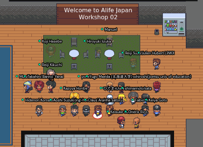

Dear all,
We would like to announce a new opportunity for early career researchers funded by the John Templeton Foundation. Please feel welcome to share it to colleagues within your personal networks.
A global call is now underway for applications from early career (*) researchers from "biological chemistry", "non equilibrium physics" and "artificial life" to an all-expenses paid workshop in central europe, June 2022. Thirty successful applicants will be flown to Prague CZ in late June to spend a week forming teams that each propose how to advance current frontiers in abiogenesis research. At the end of the week, these proposals will have access to $5M total funding to implement their ideas. For further information, an email for questions from potential applicants, and the application form itself are all on the event website: https://templetonideaslab.umbc.edu/
Thank you, and good luck everyone!
Best wishes, Olaf
Since the early 1990’s, virtual creatures have captured the imagination of artists, engineers, philosophers and scientists. Virtual creatures can now be found in our favorite animated movies, the design of useful robots and novel organisms, and the genesis of better explanations of nature and all of its creatures.
Be part of the next generation of virtual creatures, and enter the 2022 Virtual Creatures Competition (VCC)!
The VCC is now soliciting short films (under five minutes) from thinkers, builders, and artists, of their latest simulated artificial lifeforms. Submissions will be judged on their contribution to science (new explanatory theories), engineering (technical achievement), and art (aesthetic appeal). To enter, submit your five-minute film, along with a one page summary, before July 1.
Email submissions to: caitlin.grasso@uvm.edu
Deadline: July 1, 2022
Website: https://virtualcreatures.github.io
Organizers: Caitlin Grasso, Kathryn Walker, Lana Sinapayen, Sam Kriegman.
by Mikihiro Suda (suda(at)websci.cs.tsukuba.ac.jp)
On 2022-12-06, I participated in the workshop of the Japanese Society of Artificial Life. The purpose of this workshop was to share and discuss a wide range of research on artificial life. In fact, what impressed me the most was the great variety of research fields presented. In the oral presentation session, three researchers gave presentations. I presented my research on human relationships as an ecosystem and extracting keystone relationships from social networks. The other two researchers presented a study on emergence in the legal world from a computational perspective, and a study on wealth distribution in a multi-agent simulation with agents with personalities. Just by looking at the contents of these three presentations, you can see the diversity of research discussed at the workshop.
In addition to the oral presentations, there were also poster sessions and keynote speeches. The poster session used an online communication tool called Gather, where 12 posters were displayed in a user interface that resembled an RPG game. I was impressed by the very cheerful atmosphere of the entire workshop. I think one of the reasons is that there were many young participants, and I was able to see everywhere that the discussions were friendly and active.

Overall, I feel that it was a very meaningful workshop. I am deeply grateful to have been able to participate in such an occasion.
By Federico Pigozzi, University of Trieste (pigozzife@gmail.com)
Link: https://www.gwern.net/docs/reinforcement-learning/1992-ackley.pdf
The authors experiment with a grid-world environment, which rewards agents for eating food and punishes them for dying (either of starvation or being killed by predators). The agent model employs two networks: an evaluation network that predicts the goodness of a state, and an action network that selects the next action. A genetic algorithm evolves the evaluation network against a “survival” fitness function, while a temporal reinforcement learning algorithm learns the action network (over the course of a simulation), using the output of the evaluation network as reward.
The main result is that learning and evolution together were more successful than either alone in producing adaptive populations; the authors attributed the result to the Baldwin effect, by which agents used learning to stay alive while waiting for successful behaviours to be incorporated directly into the genetic code in the form of preferences.
Moreover, the authors found that successful inherited behaviours “shielded” the inherited preferences, allowing for deleterious mutations to accumulate and eventually leading to maladaptations and instability in the population dynamics. While the former result had already been witnessed in simulations, the latter revealed a novelty.
Reason why I liked it: (Effective) adaptation in animals emerges from the interplay between evolved, instinctive traits (e.g., body) and learned, plastic traits (e.g., behaviour). Starting from the seminal study of Hinton and Nowlan (1987), researchers have asked themselves how learning and evolution can extend each other. As a matter of example, we have recently witnessed a surge in robotics papers attempting to learn controllers while evolving morphologies, and it looks a very promising research direction for the future.
by Tanner Lund (@101010Lund)
Greg Egan asks the question “What counts as life?” in many different ways throughout the course of his 1994 novel Permutation City. In a world where brain copying and approximation is possible for the well-off and where virtual copies of people can live on after the donor’s death, what counts as immortality? Are you alive if you do not have a body? If you cannot age? If you were created outside of the universe you inhabit? If you edit the parts of yourself you don’t like in the “real world”?
Visionary Paul Durham is convinced there is another, more real form of virtual immortality than what brain scans offer, and he claims to have the capital and compute resources to pull it off. He enlists the help of Maria Deluca, an ALife researcher who dabbles in a cloud-based chemistry simulation environment called the Autoverse, to engineer the jewel in his crown. She is conflicted and suspicious, but what Paul wants her to design is too big a dream for her to pass up, even if she’s convinced it couldn’t ever really be run with the limits of modern computing systems. Neither of them fully understands what they are about to create together.
Permutation City expertly weaves philosophy, metaphysics, computer science, biology, and other disciplines into a compelling vision of a future where the pursuit of immortality is tied to the pursuit of artificial life. All of this is neatly explored in a compelling narrative featuring well rounded, believable characters who are not what they appear - neither the “real” humans nor their various digital counterparts. Though at times it is bleak and pessimistic, the book is also beautiful and full of wonder.
If we do ever create artificial life, what will we owe to our creations?
Who will we become?
by Hiroki Sayama, Binghamton University, SUNY (sayama@binghamton.edu)
The most recent issue of the Journal of the Japanese Society for Artificial Intelligence (JSAI Journal) is a special issue featuring ALife, edited by Yasuhiro Hashimoto, Claus Aranha and Mizuki Oka.
Articles are all written in Japanese, but you can still try and check out its contents using machine translation (and also enjoy the gorgeous cover illustration of the issue created by Shun Iwasawa). Read the special issue here
by Lana Sinapayen (@sina_lana)
Deadline: Feb. 28th
Announcing the Fiction Science Contest, an idea contest for scientists and scientifically-minded people!
Can fake discoveries inspire real-world science? We give you fake news, you convince us it could have been true.
Prizes: $100 for the best entry to the first prompt; $100 for the best entry to the second prompt; Special mentions for other excellent entries!
Two prompts: "First Case of Biological Organism Infected by Computer Virus" and "Computer Virus Nicknamed 'Akabake' Believed to Have Biological Origins".
Find the full text prompts and rules at the contest webpage
by Leo Caussan
The Bibites is an Artificial Life Project that emulates biological processes, physics, and mutation of both phenotypical and behavioral characteristics, resulting in evolution.
The Bibites eat to gain energy, which they must expend to sustain their metabolism, move around, grow, reproduce, and do other things.
(Image 1)
Bibites of different species feeding on plant pellets
The Bibites is an evaluation-less simulation, what survives best is what is selected for. The bibites reproduce biologically, expending energy to produce offspring, which may present mutations. This results in natural selection.
(Image 2 Image 3)
A bibite with an egg it just laid (left) and the result young bibite that later came out of that egg (right)
On death, the bibites release the energy they contain (the energy they used to grow, their stored energy, etc.) is released in the form of meat pellets, which are also a potential food source for the bibites.
(Image 4)
However, one of the genes a bibite can mutate is its diet. Basically, it’s a gene that ranges from fully herbivorous to fully carnivorous. Depending on their affinity toward a particular food source, they will be more or less efficient at extracting the energy out of that source, even potentially losing energy if they are incompatible enough.
(Image 5 Image 6) Note the different mouthparts between herbivores (left) and carnivores (right)
With this possibility, I’ve always wanted predation to develop naturally in the simulation, but never actually managed to see it arise. That’s why I decided to launch an epic journey to uncover what dynamics are lacking in the simulation in order for predation to be a possible development. And if a picture is worth a thousand words, here’s a video that must be worth at least a million words. The Evolution of Predation in a Simulated Ecosystem
by Joao Guilherme (twitter: @_joaogui1))
The Bibites: Digital Life (or just Bibites) is a very interesting Alife project. The system's main individuals are bibites, virtual cratures capable of movement, reproduction, feeding and evolution. They each have genes, which are passed to their children during reproduction, and "brains", simple neural networks that dictate their behaviour. There are a couple of fruitful ways to interact with the project, among them I've done 2: Watching the youtube videos made by the developer and downloading the software and running your own simulations. On the channel one may find videos about the inner workings of the bibites, or about how ecological properties properties arise in the simulation, like herding, altruism, and in the newest series predation. Playing with the simulations is also greatly rewarding, it's quite flexible and allows one to truly formulate hypothesis and explore their validity. So overall, while not as mathematically or academically elegant as Lenia, I believe Bibites is a great example of an Alife project, and I recommend other members of the community play with the simulations and interact with the author on twitter and Reddit, to help shape future explorations.
(1) Could you give us a very quick introduction? Who you are, where you’re from, what your area is, etc?
My initial background in theatre and reportage photography. You can find photos of burning cars in the streets of Vancouver and nightlife parties in my portfolio. This has further synthesized into documentary filmmaking with the focus on communication of science. I’m currently finishing my masters at the Film and TV Faculty of the Performing Arts in Prague in the Department of Documentary Film. Besides filmmaking, I work part time at the Czech Technical University where I help to set up and coordinate interdisciplinary projects - for example a collaboration with the Czech National Institute Mental Health about machine learning analysis of sleep patterns for predicting affective mood changes in subliclinal population.
On “ALife”
(2) Why is your research Alife-like?
As an artist, I’m preparing a documentary film about the general concept of emergence. And as a science networker who dips into interesting topics across areas, I’m drawn into the theory of embodied cognition. The two areas that I’m currently exploring are about dance archeology and AAI. By dance archeology I mean the reconstruction and reinterpretation of the baroque dances that were recorded in symbolic Beauchamp-Feuillet notation. These baroque dances originated at the court of the king Louis XIV and are particularly interesting for the ritualistic and propagandistic effect they had. It is believed that Louis XIV managed to unprecedentedly consolidate power and gain authority through his grandeur ballet performances. I find this as a great example of epistemic significance of embodied cognition where we can observe cognition as a relation between mind, body, space and goal oriented action unfolding in real time. So I’m figuring out how to connect the research from the Laboratory of Chronorobotics at CTU with the analysis of the baroque dance patterns of the ballet dancers from the dance academy.
And AAI stands for animal assisted intervention. I think many people are excited about artificial intelligence because it offers some comparative perspective to our human cognition. But then I find that most of AI research provides a very isolationist perspective on cognition. So ethology in the context of animal assisted psychotherapy and emotional human-animal interaction seems to me as a very low hanging fruit for further research in comparative cognition. More than any formal research, this is a passion that I’m currently exploring as I’m learning how to ride a horse.
(3) Why do you do ALife research (especially if you have another main research field)?
I like the Alife approach to cognitive sciences because it is very bottom-up. And not only that it might make sense to go the Alife way in order to develop more advanced artificial intelligence, I think it’s also the way to even start communicating about cognition. This is useful for me when I’m thinking about how to talk about artificial intelligence or cognition in my art work. Most art and culture is drawn so much to artificial intelligence as some meaningful “other” that we can compare ourselves to. But I think that’s often intellectually very dishonest. To me it makes more sense to first explore general principles such as emergence or reinforcement feedback loops before we get speculating about human-like behaviour.
(4) What is your vision for the future of ALife research?
As I foreshadowed earlier I think it’s about the horses. Really. Equine neuroscience is still a very emerging field, yet through our mutual embodied cognition we have managed to gain a lot of utility from these animals for about 8 000 years. I think that the further study of equine cognition could enlighten us in the general principles of how the entire nervous system of an organism functions. We should focus more towards the perspective on cognition that takes into account all the sensory input from the environment and emotional regulation in the limbic system before the final evaluation in the neocortex.
On Research
(5) What convinced you to become a researcher?
As a filmmaker believing in effective altruism, I’ve been wondering what topics would make the most beneficial impact if I captured them in my films. And so communication of science seemed to me as a potentially impactful path and lots of fun. As I was making research for the development of my films, I realized that if I want to say something meaningful and intellectually honest, I should put a substantial effort into the research phase. This is far from usual in the filmmaking art world as there is rarely any budget for too much prior thinking. And so as I was meeting scientists across the fields, I was gaining horizontal understanding in different areas and I eventually drifted from filmmaking into the field of science development and science networking.
(6) What is something that made you happy about doing research recently?
As an artist I’m happy when I read someone else’s research in cognitive sciences and neurobiology that validates some rationality of emotions. I like when something previously seen as wizardry is getting more evidence based ground.
(7) When was the last time that you felt like a scientist?
I still feel quite a lot like an impostor. But these questions do make me feel a bit like a scientist. On the other hand, I would argue that a toddler figuring out how their fingers move is also a scientist.
General
(8) Who are three non-ALIFE scientists/researchers/philosophers/etc that have inspired your work/research, and how?
I really enjoyed the documentary film In Silico by Noah Hutton. It’s about the Swiss based Human Brain Project that gained a 1 billion euro grant with the ambition to simulate human consciousness. The film is unusually critical towards the research project and it offers a unique inside view into the problem of over-promise that is rarely reflected in the media. Then I really enjoyed reading the research in psychology by Bessel van der Kolk (the author of The Body Keeps the Score) and Joseph Spinazzola (research on post traumatic stress and animal assisted intervention).
(9) What is some advice you would give to your younger-self or new researchers?
Don’t worry too much about your status. It’s fine to do embarrassing things if this is what it takes to act honestly. Your integrity is the biggest asset you have.
(10) Do you have anywork that you would like to promote?
You can watch this 5 minute short film "Time Sealed" I made some time ago. It’s about the tintype photography process. I could argue it’s an early Alife film since it’s about how chemistry creates emotional life like representation.
(11) Where can people find you? (Twitter/website/etc)
Here is my website: petrsalaba.cz, until I update it, you can find there my photography and video work.
By Imy Khan (@imy_tk)
October 2021 saw the introduction of six new ERA (Emerging Researchers in ALife) board members for the 2021/22 term. We’d like to introduce these members to the ALife community. The group spans both PhD and post-PhD members located all across the globe, and represent a diverse set of experiences, expertise, and research interests.
The board is already hard at work making many changes which they will communicate in the next newsletter. If you are interested in joining the ERA group, feel free to join the Slack channel